لا توجد صورة لهذا الاختيار
فصائل المقامات
اختر المقام من القائمة
اختر الحرف من القائمة
🔹 الوصول المباشر: اضغط على أي فقرة من الفهرس أدناه لتنتقل تلقائياً إلى شرحها بالتفصيل.
🔹 البحث السريع: اكتب أي كلمة في مربع البحث أدناه، ولو كانت جزءاً من كلمة، ليظهر لك كل قسم يذكرها ضمن محتواه الكامل، لا في عنوانه فقط، فتجد أي معلومة بسرعة دون الحاجة إلى فتح كل قسم يدوياً.
يوجد زر بجانب زر المساعدة تحت زند العود يبدّل لغة التطبيق بالكامل بين العربية والإنجليزية — يتبادل نص الزر تلقائياً بين اسم اللغة الحالية بالعربي والإنجليزي (مثلاً "عربي" ↔ "Arabic")، لكي يكون واضحاً لأي زائر مهما كانت اللغة التي يقرأها.
🔹 اضغط الزر لتبديل اللغة فوراً (تُعاد الصفحة تلقائياً لتطبيق اللغة الجديدة على كل عناصر التطبيق).
🔹 اختيارك يُحفظ ويبقى مفعّلاً حتى لو أغلقت المتصفح ورجعت إلى التطبيق لاحقاً.

بجانب زر اللغة، يظهر زر إضافي فقط في الوضع الإنجليزي (بكلا التبويبين: المقامات العربية والسلالم الغربية) يبدّل طريقة تسمية النغمات بين نظامين عالميين:
🔹 صولفيج (Do, Re, Mi...) — الافتراضي، شائع بدول أوروبية ولاتينية وعربية.
🔹 حروف لاتينية (C, D, E...) — شائع بالدول الأنجلوسكسونية (أمريكا، بريطانيا).
🔹 التبديل يُطبَّق فوراً على كل شيء: أسماء النغمات على الزند (بالمقامات العربية والسلالم الغربية معاً)، قائمة اختيار المحطّ، أسماء الأوتار، أسماء الكوردات، ودائرة الرابعات والخامسات.
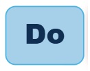
عند فتح التطبيق ستجد تبويباً في أعلى اليسار للتبديل بين المقامات العربية والمقامات الغربية. ابدأ باختيار النوع الذي تريد استكشافه. علماً بأن الاختيار الافتراضي لهذا التبويب هو المقامات العربية.
اضغط على زر ☰ اختيار المقام لفتح القائمة. اختر الفصيلة ثم المقام ثم الحرف. عند اختيار المقام سيظهر محطه بشكل افتراضي في قائمة الحروف.
يدعم التطبيق تمثيل العود بـ5 أو 6 أوتار، ويختلف عدد الحروف المتاحة لاختيار حرف التصوير حسب الوضع المختار:
بوضع 5 أوتار، يوفر التطبيق 35 حرفاً مقسمة إلى أرباع التون — من صول قرار إلى دو جواب (الوتر الأول من الأسفل للعازف اليمين، والوتر الأول من الأعلى للعازف اليسار) — لتصوير أي مقام عربي عليه.
وبوضع 6 أوتار، يوفر التطبيق ٤٥ حرفاً مقسمة إلى أرباع التون — من صول قرار إلى فا جواب (وتر الفا الشرار، الوتر الأول من الأسفل للعازف اليمين، والوتر الأول من الأعلى للعازف اليسار) — لتصوير أي مقام عربي عليه.
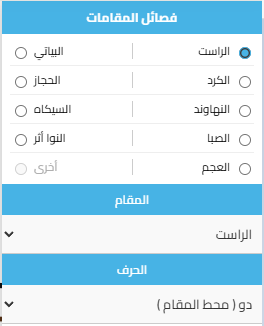
بعد اختيار المقام ستظهر زران فوق الزند:
🔹 دليل مقام [الاسم] — يعرض صورة توضيحية للمقام على المدرج الموسيقي مع شرح أجناسه.
🔹 أبعاد مقام [الاسم] — يعرض جدولاً بأبعاد المقام بأرباع التون بين كل درجة والتالية.
يعرضان دليل وأبعاد المقام المعروض على الشاشة
🔹 ملاحظة مهمة: صورة "دليل المقام" تعرض المقام دائماً بموضعه/محطّه الأساسي (مثلاً مقام الراست يظهر دائماً على الدو)، بغض النظر عن الحرف (التصوير) الذي اخترته فعلياً على الزند.
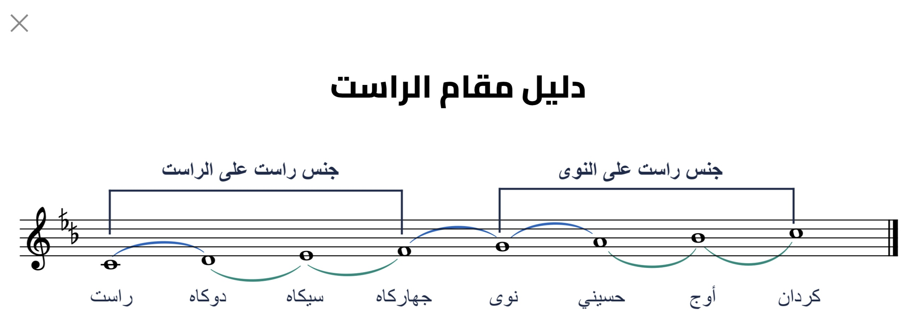
يُمثّل الزند أوتار العود (فا، لا، رى، صول، دو — وبإضافة الوتر السادس "الشرار" لو فعّلته) من الأعلى للأسفل. الأرقام فوق الزند تُمثّل الخطوط (الدساتين). المستطيلات الملونة تُشير إلى مواضع نوتات المقام.
⚠️ الخطوط البنية الرفيعة بين الخطوط المرقّمة تُمثّل أرباع التون — وهي الفارق الموسيقي الأساسي في المقامات العربية.
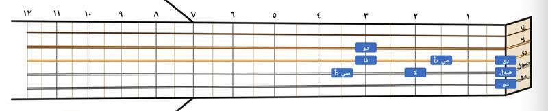
استخدم أزرار المشغل في الأسفل: ▶ تشغيل لسماع السلم، ⏸ إيقاف مؤقت، ⏹ إيقاف، ⏮ إعادة، وزر التكرار () لتشغيل السلم بشكل متواصل. يمكنك تغيير الدوزان من القائمة، والسرعة بالشريط المنزلق (أو أزرار − و+ بجانبه للضبط الدقيق) — الرقم الظاهر يمثّل السرعة بوحدة BPM (نبضة بالدقيقة)، وهي مطابقة تماماً لسرعة المترونوم الموسيقي الحقيقي. يمكن أيضاً الضغط على الحقل الرقمي وكتابة السرعة المطلوبة مباشرة بدلاً من استخدام الزرين: بمجرد الضغط على الحقل، يُفرَّغ تلقائياً استعداداً للكتابة الفورية، وإذا تم الضغط خارجه دون كتابة رقم جديد، تعود السرعة تلقائياً إلى آخر قيمة صحيحة كانت مضبوطة.
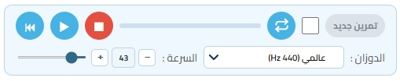
اضغط على زر ☰ اختيار المقام لفتح القائمة. اختر المفتاح من دائرة الخامسات واختر نوع السلم (ماجور، مينور طبيعي، توافقي، ميلودي). ستظهر نوتات السلم على الزند.
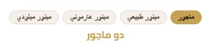
بعد اختيار مفتاح ونوع سلم من دائرة الخامسات، سيظهر زر دليل [اسم السلم] فوق زند العود (بنفس مكان زر دليل المقام العربي بالضبط).
🔹 الضغط عليه يفتح نافذة منبثقة تعرض نوتة السلم المختار على المدرج الموسيقي التقليدي (صعوداً ونزولاً)، بنفس الأوكتاف المطابق لصوته الفعلي على العود.
🔹 اسم الزر يتحدث تلقائياً مع كل مفتاح أو نوع سلم تختاره.
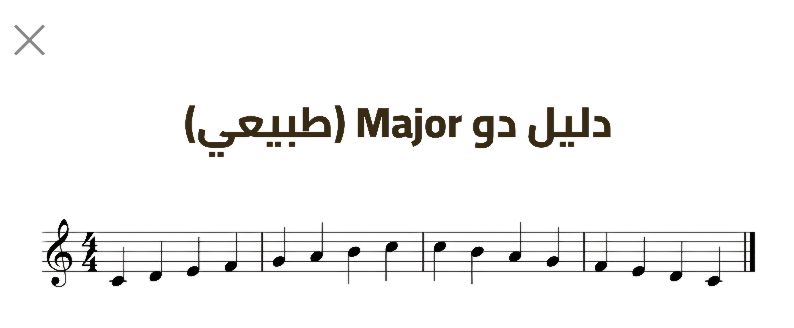
لتسهيل العزف على العازفين الذين يستخدمون اليد اليسرى، يوفر التطبيق زر واحد فوق زند العود يعرض وضعك الحالي — "يمين" أو "يسار".
🔹 الوضع الافتراضي دائماً عند فتح التطبيق: "يمين".
🔹 اضغط الزر لتبديل الوضع مباشرة — فإذا كان الوضع "يمين" يتحول إلى "يسار" والعكس صحيح، والعود بشكله وأوتاره ينقلب تلقائياً ليطابق طريقة إمساكك له بالضبط.
🔹 هذا التبديل بصري بحت — مواقع النغمات وأصواتها الصحيحة لا تتغير أبداً. يعمل بنفس الطريقة على المقامات العربية والسلالم الغربية معاً، ويبقى اختيارك ثابتاً عند التنقل بين التبويبين.
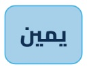
بجانب زر اليد مباشرة، يوجد زر يعرض عدد الأوتار الحالي — "5 أوتار" أو "6 أوتار".
🔹 الوضع الافتراضي: 6 أوتار (يشمل الوتر السادس "الشرار").
🔹 الضغط على الزر يبدّل العدد فوراً، ويعيد ضبط المقام/السلم المختار للوضع الافتراضي (بينما يبقى اتجاه اليد، الدوزان، والسرعة كما هي).
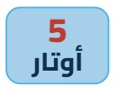
علامة الاستفهام الكبيرة "؟" تحت زند العود (بجانب زر اللغة) تفتح لك صفحة الشرح هذه بالضبط — في أي وقت تحتاج فيه إلى مراجعة أي تفصيلة.
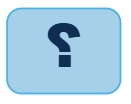
بالإضافة لتشغيل السلم أو المقام كاملاً بأزرار المشغل، يمكنك سماع أي نغمة منفردة مباشرة من على الزند بالضغط عليها. زر صغير بجانب زر المايكروفون (فوق بداية الزند) يحدد السلوك الذي يحدث عند الضغط — اضغط عليه لتبديل الوضع بين:
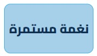
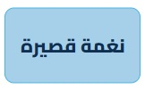
🔹 وضع "نغمة مستمرة" (الافتراضي): اضغط على أي مستطيل نغمة (بالمقامات العربية أو السلالم الغربية)، فتنطلق نغمة مرجعية مستمرة (بدون توقف، ويتحول لون المستطيل إلى الأحمر) — تستمر حتى بعد رفع إصبعك. تفيدك هذه الميزة عندما تشك أنك لم تعزف نغمة معيّنة بشكل صحيح: اضغط على المستطيل المقابل لها، واعزف نفس الموضع على عودك (سواء بوضع إصبعك على الفريت الصحيح، أو بعزف الوتر المطلق)، وقارن بين الصوتين للتأكد أن عزفك يطابق النغمة الصحيحة تماماً. اضغط على نفس المستطيل مرة أخرى ليتوقف الصوت فوراً ويعود لونه إلى طبيعته.
🔹 وضع "نغمة قصيرة": اضغط على أي مستطيل نغمة، فتنطلق نغمة طبيعية قصيرة (بنفس صوت العينات الحقيقية) وتخفت من تلقاء نفسها — يمكنك الانتقال بسرعة بين المستطيلات وكأنك تعزف فعلياً، بدون الحاجة لإيقاف كل نغمة يدوياً.
🔹 تبديل الوضع أثناء تشغيل نغمة مستمرة: إذا ضغطت زر تبديل الوضع وكانت هناك نغمة مستمرة تعمل، تتوقف تلقائياً على الفور.
🔹 التبديل بين النغمات (وضع "نغمة مستمرة"): إذا ضغطت على مستطيل نغمة ثانية وكانت هناك نغمة مستمرة تعمل، تتوقف النغمة الأولى تلقائياً ويبدأ صوت النغمة الجديدة — نغمة مستمرة واحدة فقط تعمل في أي لحظة.
🔹 التداخل مع تشغيل السلم/المقام كاملاً: النظامان (النغمة المفردة المستمرة، وتشغيل السلم الكامل بالأزرار) لا يعملان في الوقت نفسه أبداً:
- إذا ضغطت زر تشغيل ▶ وكانت هناك نغمة مفردة مستمرة تعمل، تتوقف النغمة المفردة تلقائياً ويبدأ تشغيل السلم/المقام كاملاً.
- والعكس: إذا كان السلم أو المقام يعمل تسلسلياً وضغطت على أي مستطيل نغمة (بوضع "نغمة مستمرة")، يتوقف التشغيل التسلسلي تلقائياً وتبدأ النغمة المفردة المستمرة بدلاً منه.
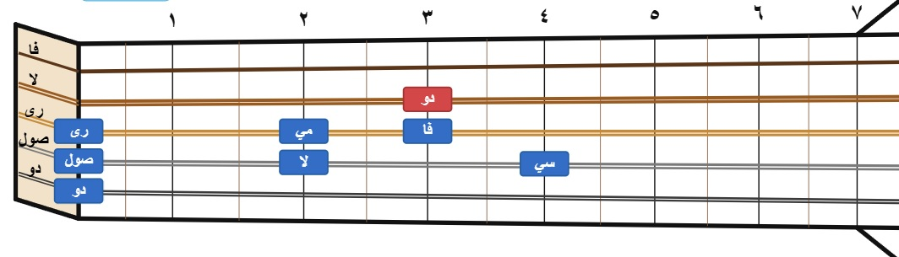
بالإضافة للسلالم نفسها، يوفر التطبيق الكوردات السبعة (الدرجات الموسيقية) لكل سلم غربي — تظهر النغمات الثلاث المكوّنة لكل كورد معاً على زند العود، بأقرب وأسهل أوضاع للعزف.
🔹 فتح قائمة الكوردات: اضغط زر "☰ اختر من الدائرة" فوق العود (بتبويب المقامات الغربية)، ثم اضغط تبويب "الكوردات" أعلى القائمة، بدل تبويب "دائرة الرابعات والخامسات".
🔹 اختيار نوع السلم: داخل قائمة الكوردات نفسها، يوجد صف أزرار (ماجور / مينور طبيعي / مينور هارموني / مينور ميلودي) يتيح لك التبديل بين الأنواع الأربعة مباشرة، وتتحدّث الكوردات فوراً دون الحاجة لإغلاق القائمة. إذا كان لديك كورد مختار وقت التبديل، يبقى نفس الكورد (نفس الدرجة، مثلاً V) مختاراً ومعروضاً تلقائياً — لكن محسوباً بصفته الصحيحة (ماجور/مينور/Diminished...) وفق النوع الجديد، دون الحاجة لاختياره من جديد. ينطبق هذا حتى إن بدّلت النوع من الزر الرئيسي أعلى العود (خارج قائمة الكوردات) وأنت في وضع كورد.
🔹 اختيار كورد: تظهر الكوردات السبعة بدرجاتها (I, ii, iii, IV, V, vi, vii°...)، وباسم كل كورد الكامل (مثل "دو Major" أو "رى Minor"). اضغط على أي كورد لتختاره — يعمل صوته فوراً وتضيء نغماته الثلاث على الزند: أزرق وهي بحالتها الثابتة، ويتحول للون أحمر لحظياً أثناء تشغيل الصوت فعلياً، ثم يرجع أزرق تلقائياً.
🔹 إعادة سماع الكورد: استخدم زر ▶ التشغيل بالمشغل بالأسفل لإعادة سماع نفس الكورد في أي وقت تشاء.
🔹 سماع كل نغمة بمفردها: يمكنك أيضاً الضغط على أي نغمة من الثلاث مباشرة (بنفس تقنية النغمة المستمرة) للتأكد من صوتها فرادى، قبل أو بدل سماع الكورد كاملاً معاً.
🔹 التحقق من عزف الكورد بالميكروفون: زر 🎤 أعلى الزند يعمل مع الكوردات أيضاً — يتحقق من عزفك للنغمات الثلاث واحدةً تلو الأخرى بترتيب تصاعدي حسب التردد الفعلي (من الأقل صوتاً إلى الأعلى، بغض النظر عن كونها أساساً أو ثالثة أو خامسة نظرياً). التفاصيل الكاملة في قسم "التحقق من عزفك" أدناه.
🔹 الرجوع للسلم: اضغط تبويب "دائرة الرابعات والخامسات" بأعلى القائمة، أو اختر مقاماً جديداً من الدائرة، للرجوع لعرض السلم العادي على الزند.
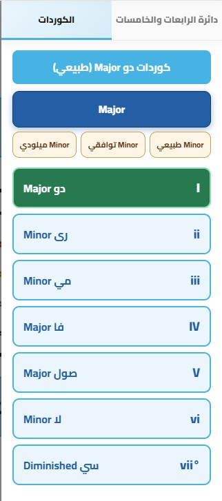
يمكن لأي زائر أن يقيّم التطبيق بنجوم من ١ إلى ٥، ويرى المعدل العام لكل التقييمات.
🔹 فتح صفحة التقييم: اضغط زر "⭐ تقييم" بأسفل الصفحة (بجانب زر "تواصل").
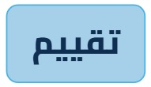
🔹 إرسال تقييمك: اضغط على عدد النجوم التي تعبّر عن رأيك (يمكنك تغيير اختيارك قبل التأكيد بالضغط على نجمة ثانية)، ثم اضغط زر "✓ تأكيد التقييم" لإرسال تقييمك فعلياً — وبهذه الطريقة لا يُحفظ تقييم بالخطأ في حال الضغط على نجمة خاطئة. بعد التأكيد تظهر رسالة شكر تأكيدية.
🔹 تقييم واحد لكل زائر: بعد إرسال تقييمك، لا يمكنك إرسال تقييم آخر من نفس الجهاز/المتصفح (تصبح النجوم مغلقة)، لكي يبقى المعدل العام دقيقاً ويعكس رأي كل زائر مرة واحدة فقط.
🔹 لديك ملاحظة أو اقتراح؟ يوجد رابط "تواصل معنا" داخل صفحة التقييم يأخذك مباشرة إلى صفحة التواصل بالتطبيق، إذا رغبت في توضيح رأيك بالتفصيل (خصوصاً لو كان تقييمك منخفض ولك سبب معيّن).
🔹 المعدل العام: يظهر بأسفل صفحة التقييم للجميع — متوسط كل التقييمات المُرسلة، وعدد الأشخاص الذين قيّموا.
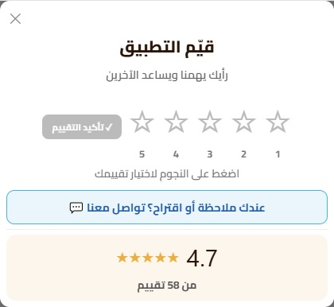
بالإضافة لسماع المقام أو السلم كاملاً، يوفر التطبيق مولّد تمارين تلقائي يبني لك تمريناً عزفياً عشوائياً مبني على درجات المقام أو السلم المختار — ويعمل على المقامات العربية والسلالم الغربية معاً.
🔹 تفعيل وضع التمارين: بجانب زر "تمرين جديد" بالمشغل السفلي، توجد خانة اختيار صغيرة. عندما تكون غير مفعّلة، يكون الزر باهتاً ومعطّلاً — وأنت في وضع الاستماع العادي للمقام أو السلم. وعند تفعيل الخانة، يصبح الزر نشطاً، ويتوقف السلّم العادي إذا كان يعمل.
🔹 توليد أول تمرين: اضغط زر "تمرين جديد" (والخانة مفعّلة) ليبدأ أول تمرين بالتوليد والتشغيل تلقائياً.
🔹 أنماط التمرين: كل ضغطة على الزر تختار عشوائياً أحد ستة أنماط كلاسيكية معروفة بكتب تمارين الآلات الموسيقية (الثلاثيات المكسورة، الأربيجيو، التسلسلات، الرباعيات المكسورة، الدوران، السداسيات المكسورة) — بترتيب عشوائي يضمن مرورك عليها جميعاً قبل أن يتكرر أي نمط.
🔹 التحكم بالتمرين: بمجرد أن يتولّد تمرين، أزرار المشغل (▶ تشغيل، ⏹ إيقاف، ⏮ إعادة) تتحكم بنفس التمرين الحالي — يمكنك إيقافه مؤقتاً واستئنافه، أو تعيده من أوله، بدلاً من توليد تمرين جديد في كل مرة. شريط السرعة يأثر على سرعة عزف التمرين بنفس طريقة تأثيره على السلّم العادي بالضبط.
🔹 تغيير المقام/السلم أثناء التمرين: يمكنك اختيار مقام أو حرف جديد (بالعربي)، أو نوع سلم جديد (بالغربي)، وأنت في وضع التمرين المفعّل — يتوقف التمرين الحالي تلقائياً، وتبقى في وضع التمرين جاهزاً تولّد على الاختيار الجديد بضغطة "تمرين جديد".
🔹 الخروج من وضع التمارين: ألغِ تفعيل الخانة في أي وقت — يتوقف التمرين فوراً، ويرجع الزند يعرض المقام/السلم العادي كامل، وترجع أزرار المشغل تتحكم بالسلّم العادي من جديد.
🔹 ملاحظة: السلّم/المقام كامل يبقى مرسوماً على الزند طوال التمرين (وليس فقط الدرجات المستخدمة فيه)، ويمكنك الضغط على أي مستطيل نغمة أثناء التمرين لسماعها منفردة — هذا يوقف التمرين تلقائياً.
يمكنك تثبيت الموقع كتطبيق حقيقي على شاشة هاتفك الرئيسية — بأيقونة مخصصة، يفتح بملء الشاشة من دون شريط متصفح، ويعمل حتى من دون اتصال بالإنترنت (بعد أول زيارة). وتختلف الطريقة قليلاً حسب نوع الهاتف:
🔹 على أندرويد (Chrome):
١. افتح الموقع من متصفح Chrome.
٢. اضغط على أيقونة القائمة (⋮ الثلاث نقاط) أعلى يمين الشاشة.
٣. اختر "تثبيت كتطبيق ويب" (أو "تثبيت التطبيق" — التسمية تختلف قليلاً حسب إصدار Chrome والجهاز).
٤. أكّد التثبيت — وستجد أيقونة الموقع على شاشتك الرئيسية مثل أي تطبيق عادي.
🔹 على آيفون (Safari):
مهم: هذا الخيار متاح فقط بمتصفح Safari تحديداً، وليس Chrome أو أي متصفح آخر على آيفون.
١. افتح الموقع من متصفح Safari.
٢. اضغط على زر المشاركة (مربع وسهم يظهر لأعلى) بأسفل الشاشة — شكله كالتالي:
٣. مرّر لأسفل في القائمة التي تظهر، واختر "Add to Home Screen" (إضافة إلى الشاشة الرئيسية).
٤. اضغط "إضافة" بأعلى يمين الشاشة.
🔹 بعد التثبيت: يمكنك فتح الموقع من الأيقونة الجديدة بشاشتك الرئيسية مثل أي تطبيق، دون الحاجة إلى فتح المتصفح أو كتابة الرابط في كل مرة.
🔹 ملاحظة بخصوص العمل بدون إنترنت: بعد أول زيارة وتشغيل، الأساسيات (زند العود، النغمات الفردية، المقامات التي شغّلتها من قبل) تعمل حتى من دون اتصال بالإنترنت. على أندرويد هذا يكون ثابت ومستقر، أما على آيفون فممكن يكون أقل ثباتاً أحياناً (قيد من نظام Safari نفسه، وليس خللاً في الموقع).
ميزة تتيح للموقع "الاستماع" إليك أثناء عزفك على عودك الحقيقي، والتحقق تلقائياً مما إذا كنت قد عزفت المقام أو السلم أو التمرين أو الكورد المعروض على الزند بشكل صحيح — نغمةً نغمة.
🔹 القاعدة العامة لعمل الميكروفون: بمجرد ضغط 🎤، يظل الميكروفون في وضع الاستماع بشكل مستمر — حتى لو بدّلت المقام أو السلم أو الكورد، وحتى بعد إتمام التسلسل بنجاح — ولا يتوقف إلا بإحدى حالتين: ضغط زر ▶ (التشغيل العادي)، أو ضغط 🎤 نفسه مرة أخرى لإيقافه يدوياً.
🔹 ما يقتصر على العود فقط: بما أن الميزة تعتمد على قياس التردد الصادر من المايكروفون، يمكنك تجربتها بأي آلة موسيقية أخرى تملكها (بيانو، كمان، غيتار...)، بل تستطيع عمل الاختبار بصوتك أيضاً (بدندنة أو غناء النغمة المطلوبة) بدل العزف على آلة — طالما أن النغمة الصادرة مطابقة للتردد المطلوب، ستُقبل بنفس الطريقة تماماً.
🔹 موقع الزر: زر 🎤 يقع فوق الزند، بين فريت ٠ وفريت ١ (بمحاذاة صف زر اختيار اليد وزر عدد الأوتار) — وهو متاح في جميع الأوضاع: المقامات العربية، السلالم الغربية، التمارين، وكذلك الكوردات.
🔹 قبل البدء:
١. اضبط "الدوزان" من القائمة أسفل المشغّل بما يطابق دوزان عودك الحقيقي (عالمي، ناقص نصف تون، ناقص تون كامل، أو ناقص تون ونصف) — وهذا أمر بالغ الأهمية، إذ يعتمد التطبيق في مقارنته على ترددات محسوبة بناءً على هذا الإعداد تحديداً.
٢. استمع إلى المقام أو السلم أو التمرين أو الكورد المطلوب عبر زر ▶ العادي، بقدر ما تحتاج من مرات، قبل الشروع في التحقق.
🔹 طريقة الاستخدام:
١. اضغط 🎤 — في أول استخدام سيطلب منك المتصفح الإذن بالوصول إلى الميكروفون، فوافق عليه.
٢. يتحول الزر إلى شكل الاستماع تدل على أنه يستمع إليك فعلياً في تلك اللحظة.
٣. اعزف الدرجات بالترتيب على عودك الحقيقي، درجةً درجة، بنفس تسلسل الصعود ثم النزول الذي يشغّله زر ▶ العادي بالضبط (وفي الكوردات: من أقل نغمة تردداً إلى أعلاها صوتياً، بغض النظر عن كونها أساساً أو ثالثة أو خامسة نظرياً).
٤. تضيء الدرجة المطلوب عزفها حالياً بمربع أصفر نابض بكامله (مع ظهور اسم النغمة بلون داكن فوقه)، لتعرف بدقة أين وصلت.
٥. كل نغمة صحيحة تتلوّن تلقائياً بالأخضر الداكن، وينتقل التظليل الأصفر إلى الدرجة التالية.
٦. إن أخطأت في نغمة، تتلوّن بالأحمر للحظة، ثم يعود التظليل الأصفر إلى النغمة ذاتها فقط لإعادة المحاولة عليها — أما النغمات التي عزفتها بشكل صحيح قبلها فتبقى خضراء دون أن تتأثر، ولا يعود تقدّمك إلى بداية السلّم.
٧. بعض المقامات والسلالم تختلف نغماتها فعلياً عند النزول عن الصعود (مثل مقام الراست، وسلم Minor الميلودي) — في هذه الحالات يعيد الزند رسم نفسه تلقائياً عند وصولك لتلك الدرجة، ليعكس الموضع والنغمة الصحيحة للنزول بالضبط.
٨. إذا أتممت التسلسل كاملاً وبشكل صحيح من البداية إلى النهاية (صعوداً ونزولاً)، ستصلك رسالة تهنئة، ثم تعود الدرجة الأولى للإضاءة الصفراء من جديد، والاستماع يستمر دون توقف — جاهز فوراً لمحاولة أخرى.
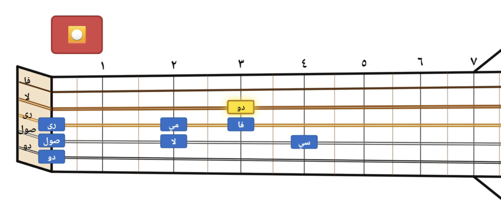
🔹 تجربة أكثر من مقام أو سلم دون توقف: يظل الميكروفون يعمل حتى إن بدّلت المقام أو المحطّ أو السلم أو اخترت كورداً جديداً وأنت لا تزال في وضع الاستماع — يكتشف التطبيق التغيير تلقائياً ويبدأ التحقق من المحتوى الجديد فوراً، دون الحاجة لضغط 🎤 من جديد لكل مقام تجربه.
🔹 ملاحظة: إذا ضغطت زر ▶ (التشغيل العادي) وأنت في وضع الاستماع، يتوقف التحقق تلقائياً — لأنك على الأغلب ترغب في سماع المقام الجديد أولاً قبل اختباره، ولتفادي دخول صوت التشغيل نفسه عبر الميكروفون. اضغط 🎤 من جديد متى كنت جاهزاً للاختبار.
🔹 التحقق مع وضع التمارين ("تمرين جديد"): إذا كنت في وضع تمرين نشط، فإن التحقق يتبع نفس النمط الفعلي الذي ولّده التمرين (ثلاثيات، أربيجيو، سداسيات، مشي لحني...) بترتيبه بالضبط — وليس ترتيباً تصاعدياً بسيطاً. أي إنه إذا كان التمرين يطلب منك أن تعزف "الأولى، الثالثة، الخامسة، الثامنة، الخامسة، الثالثة، الأولى" (نمط أربيجيو مثلاً)، التحقق يطلب نفس هذا الترتيب بالضبط، حتى لو تكررت نفس الدرجة أكثر من مرة في مواضع مختلفة من التمرين.
🔹 لإيقاف المحاولة يدوياً في أي وقت، اضغط 🎤 (أو ) مرة أخرى.
🔹 نصائح لتحقيق أفضل دقة:
- اعزف بصوت واضح ومستمر (دع الوتر يرنّ ثانية واحدة على الأقل)، لا بنقرة سريعة خفيفة.
- كن قريباً نسبياً من ميكروفون جهازك، وفي مكان هادئ قدر الإمكان.
- تأكد من ضبط الدوزان بشكل صحيح قبل البدء — فهذا أكثر الأسباب شيوعاً لعدم التطابق.
ميزة تتيح لك حفظ أي مقام (فصيلة + مقام + حرف) تستخدمه بشكل متكرر، للرجوع إليه لاحقاً بضغطة واحدة بدل تصفّح القائمة كل مرة.
🔹 موقع الزر: أيقونة ⭐ صغيرة بجانب زر "☰ اختيار المقام" (أعلى الشاشة).
🔹 الإضافة: بعد اختيار المقام المطلوب على الزند، اضغط زر ⭐ المفضلة، ثم اختر "➕ إضافة الحالي للمفضلة" — يظهر تأكيد فوري بنجاح الإضافة.
🔹 الفتح والانتقال: اضغط زر ⭐ المفضلة، ثم اختر "📂 فتح المفضلة" لعرض قائمة كل المحفوظات (الفصيلة، المقام، الحرف لكل عنصر). اضغط على أي عنصر للانتقال مباشرة إليه على الزند.
🔹 الحذف: اضغط ✕ بجانب أي عنصر داخل قائمة المفضلة لحذفه.
🔹 هذه الميزة خاصة بالمقامات العربية فقط، وتُحفظ محلياً على جهازك.
يتوفر للتطبيق مظهر داكن مريح للعين في الإضاءة المنخفضة، بجانب المظهر الفاتح.
🔹 تلقائياً: يتبع التطبيق إعداد جهازك — داكن إذا كان جهازك على الوضع الداكن، وفاتح إذا كان على الوضع الفاتح.
🔹 زر المظهر: بأسفل الزند (بجانب زر "تقييم") ويعرض المظهر الحالي: "🌙 داكن" أو "☀️ فاتح". اضغطه للتبديل بينهما في أي وقت، ويُحفظ اختيارك على جهازك.